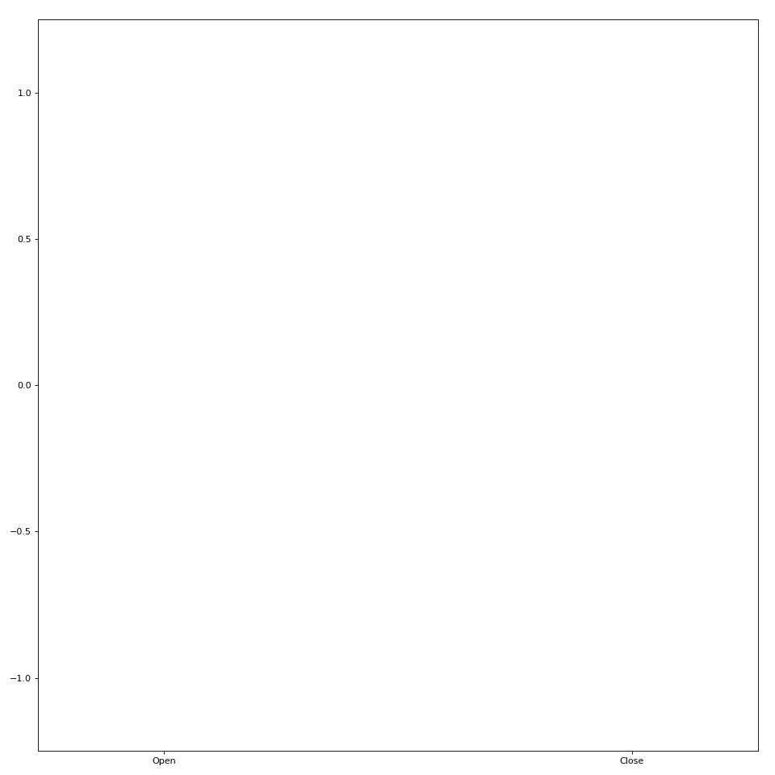
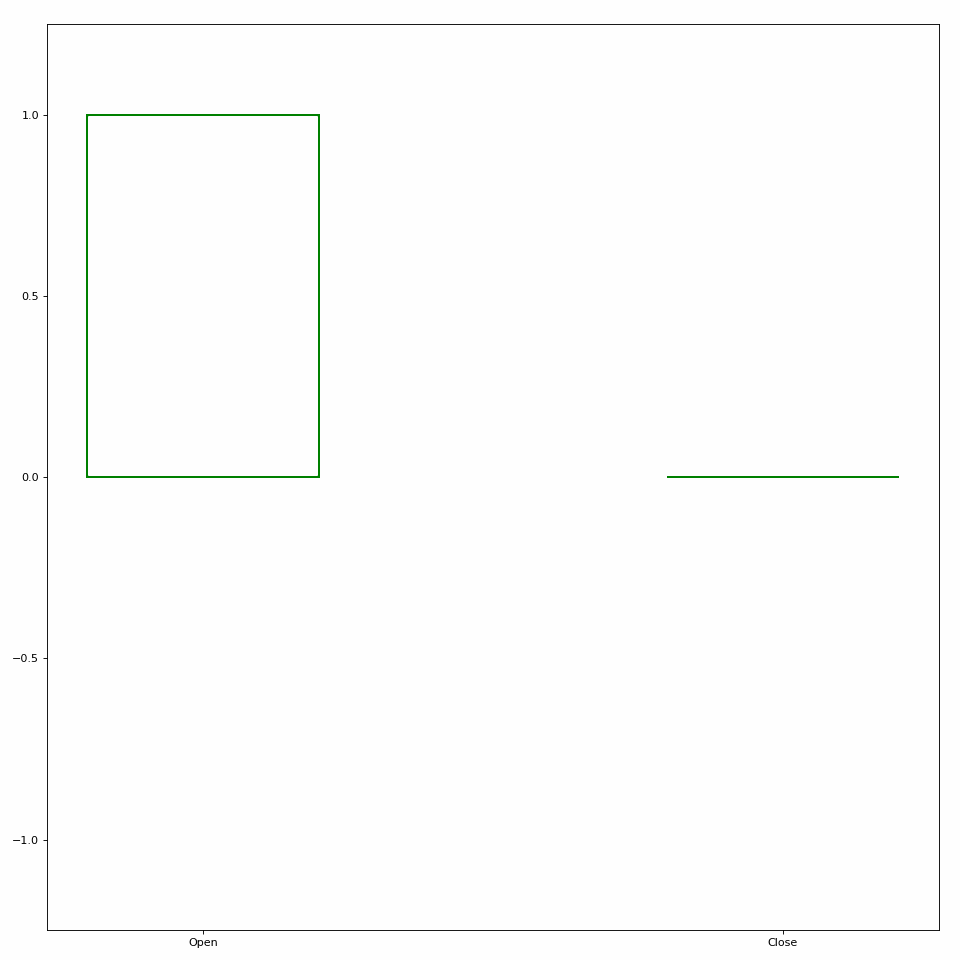
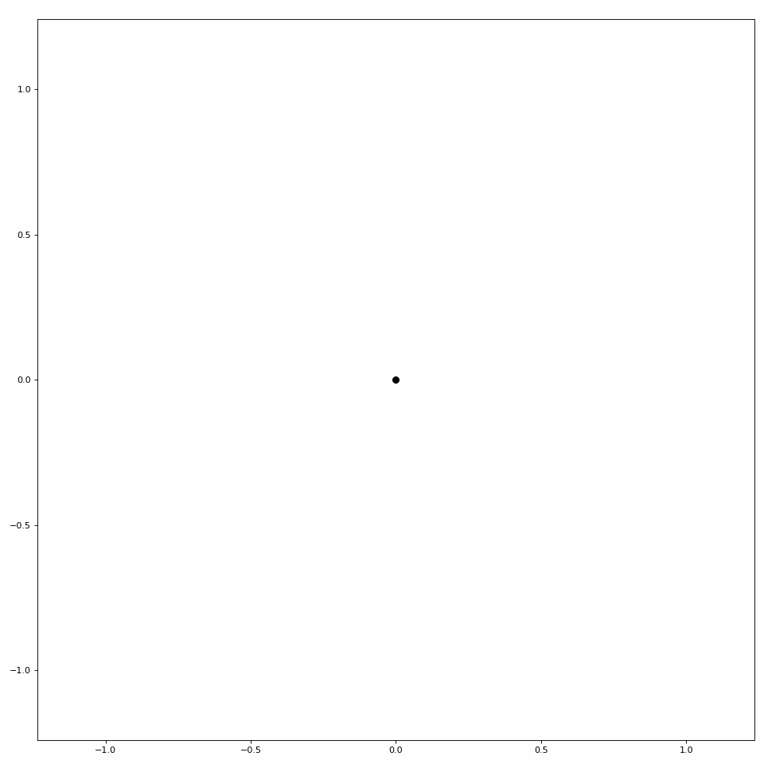
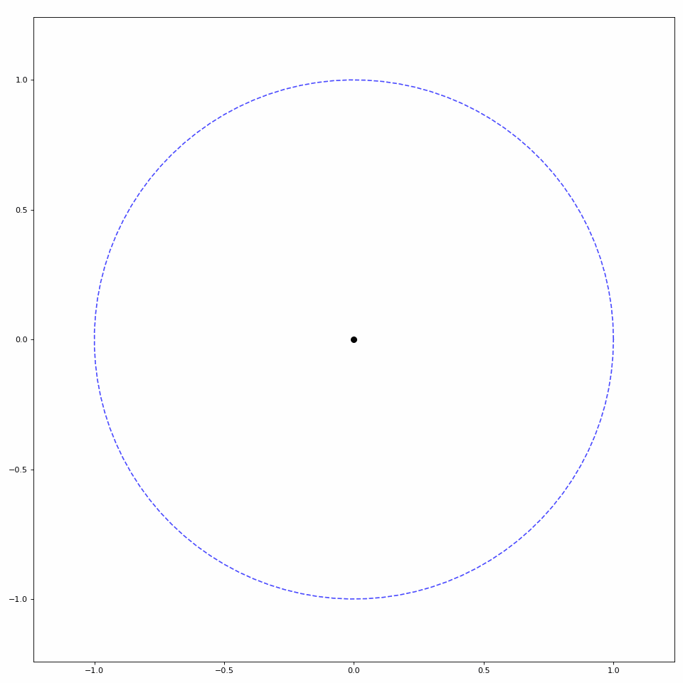

Use Case
The Animator class offers some simple functionality to create animations in multiple video formats (e.g., .gif and .mp4). Specific Animator classes have been created to help create specific visual prompts, such as bar plots and cartesian plots. These prompts are primarily used for training of regression-based myoelectric control systems, but the Animator class can also be used to generate these prompts for any purpose. For fully custom animations, you can inherit from the Animator class and pass a set of frames to save_video() (see other Animators for examples). If you’d rather implement a custom plotting animation that isn’t supported, you can inherit from PlotAnimator instead.
For all further examples, we will use a generated set of coordinates to illustrate the difference between plots.
import numpy as np
fps = 24
coordinates = np.concatenate((
np.linspace(0, 1, num=fps), # each movement is 24 frames -> 1 second
np.ones(2 * fps), # steady state
np.linspace(1, -1, num=2 * fps),
np.ones(2 * fps) * -1,
np.linspace(-1, 0, num=fps)
))
coordinates = np.hstack((
np.expand_dims(coordinates, 1),
np.zeros((coordinates.shape[0], 1))
))
Bar Plots
One type of Animator built into LibEMG creates bar plot animations. Pass in an array of coordinates to the plot_icon method to create a bar plot visualization (see Figure 1).
from libemg.animator import BarPlotAnimator
animator = BarPlotAnimator(['Open', 'Close'], fps=fps)
animator.save_plot_video(coordinates)

Figure 1: Simple bar plot animation.
Additional information can also be shown during these animations, such as the next destination and a countdown for steady states (see Figure 2).
animator = BarPlotAnimator(['Open', 'Close'], fps=fps, show_countdown=True, show_direction=True)
animator.save_plot_video(coordinates)

Figure 2: Bar plot animation with added information.
Parameters such as the time per unit distance, figure size, and more can also be modified. See the BarPlotAnimator API for more details.
Scatter Plots
LibEMG also provides a helper class to animate scatter plots (see Figure 3).
from libemg.animator import ScatterPlotAnimator
animator = ScatterPlotAnimator(['Open', 'Close'], fps=fps)
animator.save_plot_video(coordinates)

Figure 3: Simple scatter plot animation.
Similar to the bar plot animation, extra information can be added such as next destination, a countdown, and a unit circle boundary (see Figure 4).
animator = ScatterPlotAnimator(['Open', 'Close'], fps=fps, show_countdown=True, show_direction=True, show_boundary=True)
animator.save_plot_video(coordinates)

Figure 4: Scatter plot animation with added information.
Parameters such as the time per unit distance, figure size, and more can also be modified. See the ScatterPlotAnimator API for more details.